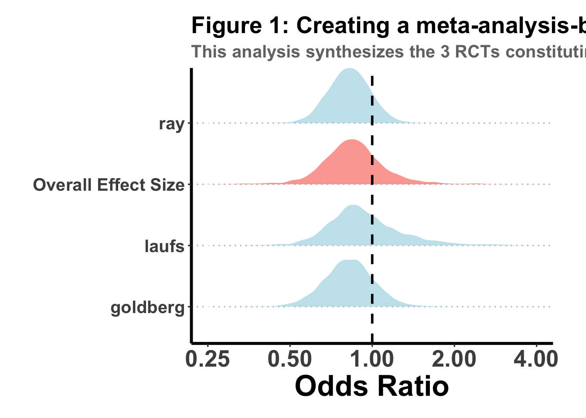

Last updated: 2024-01-07
Checks: 6 1
Knit directory: bayesclinical/
This reproducible R Markdown analysis was created with workflowr (version 1.7.1). The Checks tab describes the reproducibility checks that were applied when the results were created. The Past versions tab lists the development history.
The R Markdown file has unstaged changes. To know which version of
the R Markdown file created these results, you’ll want to first commit
it to the Git repo. If you’re still working on the analysis, you can
ignore this warning. When you’re finished, you can run
wflow_publish to commit the R Markdown file and build the
HTML.
Great job! The global environment was empty. Objects defined in the global environment can affect the analysis in your R Markdown file in unknown ways. For reproduciblity it’s best to always run the code in an empty environment.
The command set.seed(20240101) was run prior to running
the code in the R Markdown file. Setting a seed ensures that any results
that rely on randomness, e.g. subsampling or permutations, are
reproducible.
Great job! Recording the operating system, R version, and package versions is critical for reproducibility.
Nice! There were no cached chunks for this analysis, so you can be confident that you successfully produced the results during this run.
Great job! Using relative paths to the files within your workflowr project makes it easier to run your code on other machines.
Great! You are using Git for version control. Tracking code development and connecting the code version to the results is critical for reproducibility.
The results in this page were generated with repository version 10dcc83. See the Past versions tab to see a history of the changes made to the R Markdown and HTML files.
Note that you need to be careful to ensure that all relevant files for
the analysis have been committed to Git prior to generating the results
(you can use wflow_publish or
wflow_git_commit). workflowr only checks the R Markdown
file, but you know if there are other scripts or data files that it
depends on. Below is the status of the Git repository when the results
were generated:
Unstaged changes:
Modified: analysis/clear2.Rmd
Note that any generated files, e.g. HTML, png, CSS, etc., are not included in this status report because it is ok for generated content to have uncommitted changes.
These are the previous versions of the repository in which changes were
made to the R Markdown (analysis/clear2.Rmd) and HTML
(docs/clear2.html) files. If you’ve configured a remote Git
repository (see ?wflow_git_remote), click on the hyperlinks
in the table below to view the files as they were in that past version.
| File | Version | Author | Date | Message |
|---|---|---|---|---|
| Rmd | 10dcc83 | Sarah Urbut | 2024-01-06 | Update |
| html | 10dcc83 | Sarah Urbut | 2024-01-06 | Update |
| Rmd | 41823f1 | Sarah Urbut | 2024-01-06 | Update |
| html | 41823f1 | Sarah Urbut | 2024-01-06 | Update |
In the CLEAR outcome trial, the aim was to find a clinically meaninful difference on MACE using Bempedoic Acid in statin-intolerance patients.
Let’s first compare the primary outcomes (found significant) using a unimodal Normal shrinkage prior. We take advantage that the logOR is approximately normally distributed, and that the normal distribution has a conjugate (normal) prior. This means that the Posterior and Prior take the same form, and in the case of the normal distribtuion, so does the likelihood!
Definition: A skeptical prior is centered at 0, with the standard deviation calculated such that only 10% of the probability mass is to the left of the Minimal Clinically Important Difference (MCID).
Let MCID be the minimal clinically important difference converted to its log odds ratio equivalent, log_mcid. To find the standard deviation (sigma_skeptical), determine the z-score that leaves 90% of the distribution to the right of log_mcid. This z-score corresponds to the 10th percentile of the standard normal distribution.
# Given data from the table
n_treatment <- 6992
events_treatment <- 819
n_control <- 6978
events_control <- 927
# Calculate the odds ratio (OR)
or <- (events_treatment / (n_treatment - events_treatment)) / (events_control / (n_control - events_control))
# Convert OR to logOR
log_or <- log(or)
# Calculate the standard error of the logOR
se_log_or <- sqrt((1 / events_treatment) + (1 / (n_treatment - events_treatment)) + (1 / events_control) + (1 / (n_control - events_control)))Now we need to define the MCID as an absolute risk reduction of 1.3% and convert the absolute risk reduction to logOR for MCID.
mcid_arr <- 0.013
# Assuming a baseline risk from the control group
(baseline_risk <- events_control / n_control)[1] 0.1328461# Calculate the risk in the treatment group
risk_treatment <- baseline_risk - mcid_arr
# Calculate the odds for control and treatment
odds_control <- baseline_risk / (1 - baseline_risk)
odds_treatment <- risk_treatment / (1 - risk_treatment)
# Calculate the odds ratio (OR)
or_mcid <- odds_treatment / odds_control
# For Bayesian analysis, we often use the natural log of the OR
(log_mcid <- log(or_mcid))[1] -0.1178632Here we show that these infact produce desired priors:
z_skeptical <- qnorm(0.10)
sigma_skeptical <- abs(log_mcid / z_skeptical)
pnorm(log_mcid,sd=sigma_skeptical)[1] 0.1For the enthusiastic prior, we want 70% of the distribution to be below 0 when the mean is at log_mcid. To find the standard deviation (sigma_enthusiastic), calculate the z-score that corresponds to the 70th percentile of the standard normal distribution.
z_enthusiastic <- qnorm(0.70)
sigma_enthusiastic <- abs((0 - log_mcid) / z_enthusiastic)
pnorm(0,mean=log_mcid,sd = sigma_enthusiastic)[1] 0.7Calculation:
For the pessimistic prior, we want 70% of the distribution to be above 0 when the mean is at -log_mcid. To find the standard deviation (sigma_pessimistic), calculate the z-score that corresponds to the 30th percentile of the standard normal distribution.
z_pessimistic <- qnorm(0.30)
sigma_pessimistic <- abs((0 + log_mcid) / z_pessimistic)
pnorm(0,mean=-log_mcid,sd = sigma_pessimistic)[1] 0.3$log_or
[1] -0.1178632
$se_log_or
[1] 0.05125434
$skeptical_prior
$skeptical_prior$mu
[1] 0
$skeptical_prior$sigma
[1] 0.09196915
$enthusiastic_prior
$enthusiastic_prior$mu
[1] -0.1178632
$enthusiastic_prior$sigma
[1] 0.224758
$pessimistic_prior
$pessimistic_prior$mu
[1] 0.1178632
$pessimistic_prior$sigma
[1] 0.224758Conjugate analysis:
# Function to calculate the posterior
calc_conjugate_posterior <- function(log_or, se, prior) {
var_prior <- prior$sigma^2
var_data <- se^2
var_post <- 1 / (1 / var_prior + 1 / var_data)
mu_post <- var_post * (log_or / var_data + prior$mu / var_prior)
return(list(mu = mu_post, sigma = sqrt(var_post)))
}
# Calculate the posterior for the skeptical prior
posterior_skeptical <- calc_conjugate_posterior(log_or, se_log_or, skeptical_prior)
posterior_skeptical$mu
[1] -0.08993193
$sigma
[1] 0.04477117posterior_enthus <- calc_conjugate_posterior(log_or, se_log_or, enthusiastic_prior)
posterior_enthus$mu
[1] -0.1178632
$sigma
[1] 0.04997147posterior_pess <- calc_conjugate_posterior(log_or, se_log_or, pessimistic_prior)
posterior_pess$mu
[1] -0.1062106
$sigma
[1] 0.04997147Show that this approximates the MCMC result:
summary(fit)$summary mean se_mean sd 2.5% 25% 50%
theta -0.0892656 0.000890657 0.04464103 -0.1762427 -0.1194514 -0.08848905
lp__ -1.1237279 0.011592876 0.69327201 -3.0625956 -1.2852654 -0.85295286
75% 97.5% n_eff Rhat
theta -0.05911617 -0.0006255115 2512.161 1.001086
lp__ -0.67934551 -0.6271662712 3576.226 1.000740stan_data <- list(logOR = log_or, SE = se_log_or, mu_prior=pessimistic_prior$mu,sd_prior = pessimistic_prior$sigma)
# Run MCMC simulation
fit <- stan(model_code = stan_model_code, data = stan_data, iter = 4000, chains = 4,verbose = FALSE,refresh=0)
# Extract the results
summary(fit)$summary mean se_mean sd 2.5% 25% 50%
theta -0.1056423 0.0009116835 0.0497107 -0.2022624 -0.1388499 -0.1058686
lp__ -1.0176023 0.0123111314 0.7018088 -3.0300432 -1.1807749 -0.7402667
75% 97.5% n_eff Rhat
theta -0.07286114 -0.00677361 2973.114 1.000089
lp__ -0.57388325 -0.52320057 3249.688 1.000736stan_data <- list(logOR = log_or, SE = se_log_or, mu_prior=enthusiastic_prior$mu,sd_prior = enthusiastic_prior$sigma)
# Run MCMC simulation
fit <- stan(model_code = stan_model_code, data = stan_data, iter = 4000, chains = 4,verbose = FALSE,refresh=0)
# Extract the results
summary(fit)$summary mean se_mean sd 2.5% 25% 50%
theta -0.1167074 0.0009502531 0.04938065 -0.215788 -0.1506633 -0.1155994
lp__ -0.4884533 0.0121469272 0.67127462 -2.434386 -0.6476539 -0.2353314
75% 97.5% n_eff Rhat
theta -0.08230485 -0.0210853140 2700.443 1.000945
lp__ -0.05520860 -0.0005307251 3053.990 1.002110Variation in the treatment effect of Bpd across different studies (via the random effect (bpd - 1|study)).
First, we will conduct a meta-analysis of the 3 RCTs that tested similar filter-based devices. This meta-analysis will form the basis of our subsequent prior.
#Load the packages & functions that we will need for this analysis
require("brms")
require("tidybayes")
detach("package:rstanarm", unload = TRUE)
detach("package:rstan", unload = TRUE)
require("dplyr")
require("ggplot2")
require("ggridges")
require("ggpubr")
require("ggthemes")
require("bpp")
require("foreach")
#Trial 1: goldberg et al
goldberg <- data.frame(
study = "goldberg",
#Trial name
total_n = c(522, 257),
#Total sample size in each group
events_n = c(32, 21),
#Patients with MACE in each group
bpd = c(0.5,-0.5) #bpd (Yes/No)
)
#Trial 2: laufs et al
laufs <- data.frame(
study = "laufs",
#Trial name
total_n = c(234, 111),
#Total sample size in each group
events_n = c(9, 0),
#Patients with MACE in each group
bpd = c(0.5,-0.5) #bpd 1/0 (Yes/No)
)
#Trial 3: Ray
ray <- data.frame(
study = "ray",
#Trial name
total_n = c(1487, 742),
#Total sample size in each group
events_n = c(68, 42),
#Patients with MACE in each group
bpd = c(0.5,-0.5) #bpd 1/0 (Yes/No)
)
#Combine the data from the 6 trials into a single dataframe
combined_data <- rbind(goldberg, ray, laufs)
#Now, we will write the formula we will use in the regression model
ma_formula <- bf(events_n |
trials(total_n) ~ 0 + #Remove the intercept from the model (such that the risk of stroke is not modeled using a common term but is modeled separately for each study)
factor(study) + #A term to refer to each study
bpd + # Fixed treatment effect of bpd
(bpd - 1 |study)) # We allow for a random slope, but a fixed intercept effectNow, we will set up our priors (on the log-odds scale), as we recall that the natural link for a binomial process is the logit function, and the logOR is normally distributed.
Treatment effect prior, is `flat’ suggesting that all the information will be gelamed from the observed studies which will inform our later posterior
Fixed effect prior for MACE within the population, which is centered on the logOR of 13% (-2) that we observed previously
Heterogeneity prior, a ‘fat tailed’ cauchy prior with sd 0.5, commonly chosen in meta analyses
#Prior for the Treatment effect of BPD (a normal distribution with a mean of 0 and a standard deviation of 10 implies a flat prior (we are unsure if the prior effect is small or large)
bpd_prior <- prior(normal(0, 10), class = b, coef = "bpd")
#Prior for the Baseline risk of MACE (this prior is centered on a baseline risk of CAD of 13.%, recall from th baseline analysis: log(baseline_risk))
mace_prior <- prior(normal(-2, 0.5), class = b)
#Prior for between-trial Heterogeneity (this prior expresses our uncertainty about how similar trials are to one another in terms of the effectiveness of bpd. A half-cauchy with a scale parameter of 0.5 represents a common choice in most meta-analyses)
heterogeneity_prior <- prior(cauchy(0, 0.5), class = sd)
#Now, we will collect these priors together and store them in "ma_priors" (ma: meta-analysis)
ma_priors <- c(bpd_prior, mace_prior, heterogeneity_prior)
#Because Bayesian analyses can be somewhat time-consuming, we will use all the cores our machine has to increase computational speed
options(mc.cores = parallel::detectCores())
ma_model <-
brm(
data = combined_data,
#Use the combined dataset for the 6 trials
family = binomial,
#Using a binomial distribution (Since our outcome is a binary MACE/noMACE
formula = ma_formula,
#Use our formula
seed = 100,
#Set seed for reproducibility
prior = ma_priors,
#Use our prior
control = list(adapt_delta = 0.99)
)
saveRDS(ma_model,"~/Library/CloudStorage/Dropbox-Personal/ma_model.rds")ma_model=readRDS("~/Library/CloudStorage/Dropbox-Personal/ma_model.rds")
sum_ma_model <- summary(ma_model)
#Get the parameters of the row which corresponds to the treatment (BPD)
ma_bpd_par <- sum_ma_model$fixed[rownames(sum_ma_model$fixed) == "bpd", ]
##Store relevant variables
#The log odds ratio
ma_bpd_lnor <- round(ma_bpd_par$Estimate, 2)
#Standard error of the log odds ratio
ma_bpd_lnor_sd <- round(ma_bpd_par$Est.Error, 2)
#The odds ratio
ma_bpd_or <- round(exp(ma_bpd_par$Estimate), 2)
#The lower limit of the 95% credible interval of the odds ratio
ma_bpd_or_lci <- round(exp(ma_bpd_par$`l-95% CI`), 2)
#The upper limit of the 95% credible interval of the odds ratio
ma_bpd_or_uci <- round(exp(ma_bpd_par$`u-95% CI`), 2)
#Sample the posterior distribution of study-level estimates and the overall estimate of treatment effect
study_es <- ma_model %>%
spread_draws(r_study[study, ], b_bpd) %>%
mutate(b_bpd = r_study + b_bpd, #Create treatment effect estimates for each study
type = "Study-level estimate") #Clarify that this is the treatment effect for each study
pooled_es <- spread_draws(ma_model, b_bpd) %>%
mutate(study = "Overall Effect Size", #Clarify that this is the pooled/overall treatment effect
type = "Pooled estimate") #Same
#Exponentiate to get odds instead of log-odds ratio
fp_data <- bind_rows(study_es, pooled_es) %>%
mutate(b_bpd = b_bpd %>% exp)
We will show with MCMC and with conjugate normal
# Enter the data from the table into a data frame
meta_data <- data.frame(
study = c("Goldberg et al., 2019", "Laufs et al., 2019", "Ray et al., 2019", "Nissen et al., 2023"),
group = rep(c("Bempedoic Acid", "Placebo"), each = 4),
events = c(32, 9, 68, 831, 21, 0, 42, 927),
total = c(522, 234, 1487, 6992, 257, 111, 742, 6978)
)
# Likelihood data from the Nissen study
likelihood_data <- meta_data[meta_data$study == "Nissen et al., 2023",]
ma_bpd_lnor <- round(ma_bpd_par$Estimate, 2)
#Standard error of the log odds ratio
ma_bpd_lnor_sd <- round(ma_bpd_par$Est.Error, 2)
# Convert 'group' to a factor and create a binary treatment indicator
likelihood_data$bpd <- ifelse(likelihood_data$group == "Bempedoic Acid", 0.5, -0.5)
library(brms)
# Define the prior
# Define the mean and standard deviation for the log OR
log_or_mean <- ma_bpd_lnor # Mean log OR
log_or_sd <- ma_bpd_lnor_sd # Standard deviation of the log OR
# Assuming 'bpd' is the name of the variable for the treatment effect in your model
# Set the prior using the mean and standard deviation
nissen_prior <- set_prior(
paste("normal(", log_or_mean, ",", log_or_sd, ")"),
class = "b",
coef = "bpd"
)
# Verify the prior
nissen_model <- brm(
formula = bf(events | trials(total) ~ bpd), # Update 'bpd' if your variable name is different
data = likelihood_data,
family = binomial(),
prior = nissen_prior,
seed = 102,
control = list(adapt_delta = 0.95)
)
saveRDS(nissen_model,"~/Library/CloudStorage/Dropbox-Personal/nissen_model.rds")nissen_model=readRDS("~/Library/CloudStorage/Dropbox-Personal/nissen_model.rds")
summary(nissen_model) Family: binomial
Links: mu = logit
Formula: events | trials(total) ~ bpd
Data: likelihood_data (Number of observations: 2)
Draws: 4 chains, each with iter = 2000; warmup = 1000; thin = 1;
total post-warmup draws = 4000
Population-Level Effects:
Estimate Est.Error l-95% CI u-95% CI Rhat Bulk_ESS Tail_ESS
Intercept -1.94 0.02 -1.99 -1.89 1.00 2794 2362
bpd -0.13 0.05 -0.22 -0.03 1.00 2899 2585
Draws were sampled using sampling(NUTS). For each parameter, Bulk_ESS
and Tail_ESS are effective sample size measures, and Rhat is the potential
scale reduction factor on split chains (at convergence, Rhat = 1).Now let’s show that this matches with our conjugate analysis
# Given data from the table
n_treatment <- 6992
events_treatment <- 819
n_control <- 6978
events_control <- 927
# Calculate the odds ratio (OR)
or <- (events_treatment / (n_treatment - events_treatment)) / (events_control / (n_control - events_control))
# Convert OR to logOR
log_or <- log(or)
# Calculate the standard error of the logOR
se_log_or <- sqrt((1 / events_treatment) + (1 / (n_treatment - events_treatment)) + (1 / events_control) + (1 / (n_control - events_control)))
calc_conjugate_posterior(log_or = log_or,se = se_log_or,prior = list(mu=ma_bpd_lnor,sigma=ma_bpd_lnor_sd))$mu
[1] -0.1432264
$sigma
[1] 0.05079438
sessionInfo()R version 4.3.1 (2023-06-16)
Platform: aarch64-apple-darwin20 (64-bit)
Running under: macOS Sonoma 14.2.1
Matrix products: default
BLAS: /Library/Frameworks/R.framework/Versions/4.3-arm64/Resources/lib/libRblas.0.dylib
LAPACK: /Library/Frameworks/R.framework/Versions/4.3-arm64/Resources/lib/libRlapack.dylib; LAPACK version 3.11.0
locale:
[1] en_US.UTF-8/en_US.UTF-8/en_US.UTF-8/C/en_US.UTF-8/en_US.UTF-8
time zone: America/New_York
tzcode source: internal
attached base packages:
[1] stats graphics grDevices utils datasets methods base
other attached packages:
[1] rstanarm_2.26.1 lubridate_1.9.3 forcats_1.0.0
[4] stringr_1.5.1 purrr_1.0.2 readr_2.1.4
[7] tidyr_1.3.0 tibble_3.2.1 tidyverse_2.0.0
[10] kernlab_0.9-32 gridExtra_2.3 reshape2_1.4.4
[13] MASS_7.3-60 reshape_0.8.9 metafor_4.4-0
[16] numDeriv_2016.8-1.1 metadat_1.2-0 Matrix_1.6-4
[19] foreach_1.5.2 ggthemes_5.0.0 ggpubr_0.6.0
[22] ggridges_0.5.4 ggplot2_3.4.4 dplyr_1.1.4
[25] rstan_2.32.3 StanHeaders_2.26.28 tidybayes_3.0.6
[28] brms_2.20.4 Rcpp_1.0.11
loaded via a namespace (and not attached):
[1] mathjaxr_1.6-0 tensorA_0.36.2.1 rstudioapi_0.15.0
[4] jsonlite_1.8.7 magrittr_2.0.3 nloptr_2.0.3
[7] farver_2.1.1 rmarkdown_2.25 fs_1.6.3
[10] vctrs_0.6.4 minqa_1.2.6 base64enc_0.1-3
[13] rstatix_0.7.2 htmltools_0.5.7 distributional_0.3.2
[16] curl_5.1.0 broom_1.0.5 sass_0.4.7
[19] bslib_0.6.0 htmlwidgets_1.6.3 plyr_1.8.9
[22] zoo_1.8-12 cachem_1.0.8 whisker_0.4.1
[25] igraph_1.5.1 mime_0.12 lifecycle_1.0.4
[28] iterators_1.0.14 pkgconfig_2.0.3 colourpicker_1.3.0
[31] R6_2.5.1 fastmap_1.1.1 shiny_1.8.0
[34] digest_0.6.33 colorspace_2.1-0 ps_1.7.5
[37] rprojroot_2.0.4 crosstalk_1.2.1 timechange_0.2.0
[40] fansi_1.0.5 abind_1.4-5 compiler_4.3.1
[43] withr_2.5.2 backports_1.4.1 inline_0.3.19
[46] shinystan_2.6.0 carData_3.0-5 highr_0.10
[49] QuickJSR_1.0.9 pkgbuild_1.4.2 ggsignif_0.6.4
[52] gtools_3.9.5 loo_2.6.0 tools_4.3.1
[55] httpuv_1.6.12 threejs_0.3.3 glue_1.6.2
[58] callr_3.7.3 nlme_3.1-163 promises_1.2.1
[61] grid_4.3.1 checkmate_2.3.0 generics_0.1.3
[64] gtable_0.3.4 tzdb_0.4.0 hms_1.1.3
[67] car_3.1-2 utf8_1.2.4 pillar_1.9.0
[70] ggdist_3.3.1 markdown_1.11 posterior_1.5.0
[73] later_1.3.1 splines_4.3.1 lattice_0.22-5
[76] survival_3.5-7 tidyselect_1.2.0 miniUI_0.1.1.1
[79] knitr_1.45 git2r_0.32.0 arrayhelpers_1.1-0
[82] V8_4.4.0 stats4_4.3.1 xfun_0.41
[85] bridgesampling_1.1-2 matrixStats_1.1.0 DT_0.31
[88] stringi_1.8.2 boot_1.3-28.1 workflowr_1.7.1
[91] yaml_2.3.7 evaluate_0.23 codetools_0.2-19
[94] cli_3.6.1 RcppParallel_5.1.7 shinythemes_1.2.0
[97] xtable_1.8-4 munsell_0.5.0 processx_3.8.2
[100] jquerylib_0.1.4 coda_0.19-4 svUnit_1.0.6
[103] parallel_4.3.1 rstantools_2.3.1.1 ellipsis_0.3.2
[106] prettyunits_1.2.0 dygraphs_1.1.1.6 bayesplot_1.10.0
[109] Brobdingnag_1.2-9 lme4_1.1-35.1 mvtnorm_1.2-3
[112] scales_1.2.1 xts_0.13.1 crayon_1.5.2
[115] rlang_1.1.2 shinyjs_2.1.0